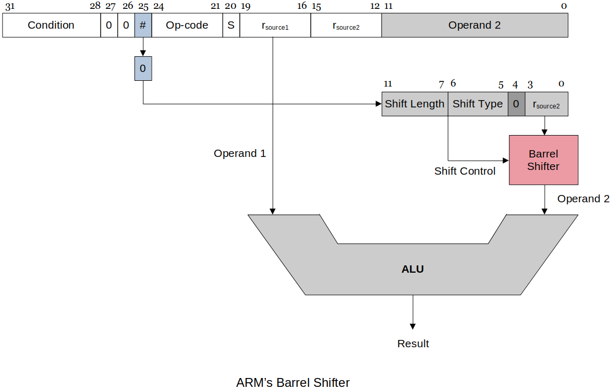

Home | Projects | Notes > Computer Architecture & Organization > ARM Instruction Set Architecture (ISA) - Data Processing Instructions
ARM Instruction Set Architecture (ISA) - Data Processing Instructions
ARM Data-processing Instructions
Data-processing instructions are the instructions used to manipulate data not just move it from one location to another.
Arithmetic Instructions
Addition
In most cases
ADDis straightforward, but there are some cases that impact the processor and the instruction set.Adding two binary numbers that fit into 32 bits works no problem!
On the ARM, the calculation will even set the Carry bit in the CCR if the results of bit 31 sum produces a carry.
32 bits for positive or two's complement provides a good size range. If you do not need all the significant digits techniques can be used for larger (or smaller) numbers to lose accuracy but make for better speed.
Adding two binary numbers that are too big to fit into 32 bits (e.g., 64-bit double or 128-bit quad word, etc.), can be problematic!
In this case, the assembly programmer has to handle this with register pairs since ARM can only add 32-bit words at a time.
xxxxxxxxxx41ADDS r4, r0, r2 @ Add the LSBs first and make sure the carry bit gets set.2ADDS r5, r1, r3 @ Add the MSBs and get the carry bit from the LSB add.3-4S is so carry bit gets set when necessaryUsing
ADC(add with carry flag) in place ofADDSalso works:xxxxxxxxxx21ADC r4, r0, r22ADC r5, r1, r3

Subtraction
Normal subtraction
xxxxxxxxxx11SUB r1, r2, r3 @ RTL: [r1] ← [r2] - [r3]Reverse subtraction
xxxxxxxxxx11RSB r1, r2, r3 @ RTL: [r1] ← [r3] - [r2]This is necessary because in the literal addressing mode, the literal has to be the last operand. In this case you can't just switch the position of the operand to perform the reverse subtraction.
Unlike addition, subtraction is NOT associative and NOT commutative.
xxxxxxxxxx21SUB r1, r2, #20 @ RTL: [r1] ← [r2] - 202RSB r1, r2, #20 @ RTL: [r1] ← 20 - [r2]Above two operations do NOT yield the same result.
Negation
Negation subtracts a number from zero.
As ARM does not have a negation instruction, you as a programmer need to do the negation yourself by using reverse subtraction.
xxxxxxxxxx21RSB r1, r1, #0 @ Negates the contents of r1.2@ if r1 originally contained 10, r1 becomes -10.In effect,
RSBproduces 2's complement.xxxxxxxxxx51MVN r0, r1 @ Copies bitwise NOT of argument. In other words,2@ copies the logical complement of the contents of r1.3@ ------------------4@ bit reversal!5@ it's not sign reversal (arithmetic reversal)In effect,
MVNproduces 1's complement.
Comparison
Implicit comparison (need to add
S)CCR bits set based on the ALU operation
SUBS,ADDS, etc.
Explicit comparison (always set the flags)
CCR bits set based on
CMPorTSTinstruction.
Multiplication
Since the multiplication of two n-bit operands may produce the product of size up to 2n-bits, this has to be handled with care.
If it is guaranteed that two operands and the product will all fit into 32 bits.
xxxxxxxxxx141MUL rd, rm, rs @ RLT: [rd] ← [rm] * [rs]2@3@ Note that rd and rm cannot be the same, because in this4@ multiplication algorithm rd is used to build up the answer so if5@ rd and rm are the same, the intermediate calculation gets6@ interfered.7@ - MUL r0, r0, r1 @ NOT OK!8@ - MUL r0, r1, r0 @ OK9@10@ The Raspberry Pi assembler checks for this and generates an11@ error during assembly.12@ - I have personally observed this error caused by using13@ ADD r1, r1, r2. This was easily solved by just modifying the14@ code to ADD r1, r2, r1.If the overflow is expected (or if you are not sure).
xxxxxxxxxx171UMULL rL, rU, rA, rB @ RTL: [rU, rL] ← [rA] * [rB]2@3@ Multiply rA and rB, place 64-bit unsigned result4@ into {rU, rL}5@ -- --6@ | least significant 32 bits7@ |8@ most significant 32 bits9@ ------------------------10@ if this part is 0, no overflow11@12@ UMULL interprets values from rA and rB as13@ unsigned integers.1415UMULLS rL, rU, rA, rB @ If S is specified,16@ - update N and Z flags according to the result.17@ - does not affect the C or V flags.The reason
UMULLhas to be used in this case is becauseMULLSwill not set the CCR flags. (Because of how theMULworks there is no way to ensure the hardware can set flags correctly so it does NOTHING. The carry bits are tied to specific bits in the ALU. It is possible when a multiplication is performed, those specific bits can show no issues but there turns out to be overflow issues.
Multiply and Accumulate (
MLA)xxxxxxxxxx31MLA r0, r1, r2, r3 @ RTL: [r0] ← [r1] * [r2] + [r3]2@ Does the multiplication and adds the product to3@ the running total.
Division
ARM does not have instruction for division.
Same type of problem with multiplication occurs in division.
There is a quotient, remainder and the sign that has to be handled as well.
You as a programmer have to write the division subroutine yourself.
Works best as a loop that does repeated subraction until you can no longer subtract the whole number, producing a quotient and a remainder.
See Multiplication & Division for more details.
Bitwise Logical Operations
Bitwise logical operations are apply to the individual bits of a register.
AND,ORR,EORxxxxxxxxxx610100 0100 01002AND 1111 ORR 1111 EOR 11113-------- -------- --------40100 1111 101156Bitwise AND Bitwise OR Bitwise exclusive OR (XOR)NOTis not supported by ARM. But, you can implement it by:Using
EORwith#FFFFFFFFon one register.Using the
MVNinstruction. (See Negation section above for more details aboutNVM.)
BIC(Bit Clear)AND's the first operand with the logical complement of the second.xxxxxxxxxx31BIC r1, r2 @ RTL: [r1] ← [r1] · [r2]2^3ANDCan be used to clear out the low-order byte of a register.
xxxxxxxxxx21BIC r0, r1, #0xFF @ Copies the 32 bits in r1 to r0 then clears bits 0 to 7 of2@ the data in r0.
A mask is used with a specific logical operation to get the bit we want to know about and exclude the ones we do not care about.
Shift Operations
Logical shift
Logical Shift Left
Each bit is shifted towards left, MSB is discarded and LSB becomes
0.
Logical Shift Right
Each bit is shifted towards right, LSB is discarded and MSB becomes
0.

Arithmetic shift
Arithmetic Shift Left
Each bit is shifted towards left, MSB is discarded and LSB becomes 0. (Similar to logical shift)
In this example, the operation has overflowed. Meaning, the result of the multiplication is larger than the largest possible value.
Arithmetic Shift Right
Each bit is shifted towards right, LSB is discarded and MSB is preserved.

Circular shift (Rotate)
The bit shifted out is copied into the bit vacated at the other end (i.e., no bit is lost during a rotate).
The bit shifted out is also copied into the carry bit.
Following figure shows
ROLandROR.

Implementing a Shift Operation on the ARM
ARM's implementation of shift operations is unique in that there is no explicit shift operations.
Instead, shifting is combined with other data processing operations because the second operand can be shifted before it is used.
ARM has a barrel shifter that can be applied to the second operand of almost any instruction.
A barrel shifter uses combinational logic to perform the shift without shift registers.
With
rsource2and shift control information, the barrel shifter knows exactly what to do.This allows multiple bits to be shifted in one execution cycle instead of each bit being shifted in each execution cycle.

ARM implements only the following five shifts (the programmer must synthesize the rest).
xxxxxxxxxx51LSL logical shift left2LSR logical shift right3ASR arithmetic shift right4ROR rotate right5RRX rotate right through the carry (only one bit at a time)Don't be confused! These are operators NOT instructions.
Since ARM does not have shift instructions, you, as a programmer, need to from instructions by using these operators as arguments to perform shift. For example:
xxxxxxxxxx31MOV r1, r1, LSL #1 @ shifts r1's bits one bit-place to the left2---3used as an "argument"